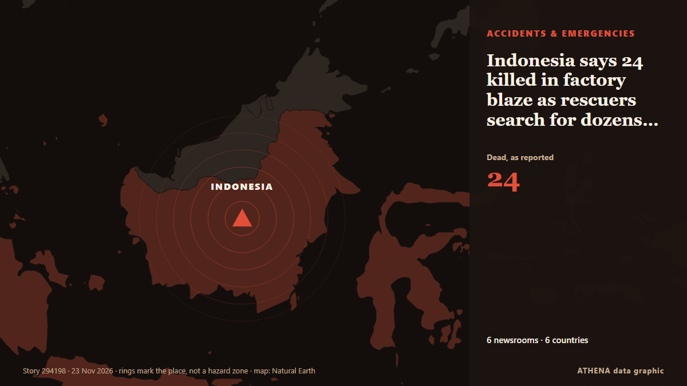

Δυστυχήματα & έκτακτες ανάγκες
ΧορηγούμενοΠαρουσιάζεται από  Cybernetics and Artificial Intelligence Lab Welcome to the Cybernetics and Artificial Intelligence Laboratory, established at the Department of Business Administration of the National and Kapodistrian University of Athens. The lab is headed by Professor Dimitrios Thomakos. The lab aims to do research that can be published in top venues. Our research uses tools and methods of Artificial Intelligence, and lies in the following areas: - Forecasting - Decision making - Cyber security - Finance We are always looking forward to collaborating with exceptional students!
Cybernetics and Artificial Intelligence Lab Welcome to the Cybernetics and Artificial Intelligence Laboratory, established at the Department of Business Administration of the National and Kapodistrian University of Athens. The lab is headed by Professor Dimitrios Thomakos. The lab aims to do research that can be published in top venues. Our research uses tools and methods of Artificial Intelligence, and lies in the following areas: - Forecasting - Decision making - Cyber security - Finance We are always looking forward to collaborating with exceptional students!
| 10 Νοε | 0 |
|---|---|
| 11 Νοε | 0 |
| 12 Νοε | 0 |
| 13 Νοε | 0 |
| 14 Νοε | 0 |
| 15 Νοε | 0 |
| 16 Νοε | 0 |
| 17 Νοε | 1 |
| 18 Νοε | 1 |
| 19 Νοε | 3 |
| 20 Νοε | 6 |
| 21 Νοε | 8 |
| 22 Νοε | 4 |
| 23 Νοε | 1 |
Οι τίτλοι των ειδήσεων παρουσιάζονται στα αγγλικά, όπως δημοσιεύτηκαν.

Indonesia says 24 killed in factory blaze as rescuers search for dozens missing
Presidential adviser says implementation of safety protocols being assessed, factory's chief executive to be summoned. από Express Tribune
3 killed, one injured in a shooting in US State of Ohio
Gunfire results in death of 19-year-old man, 45-year-old man – the father of the baby’s mother – and 17-year-old girl. από Anadolu Agency (English)
Bezzecchi wins Portuguese MotoGP sprint, Marc Marquez crashes
Raul Fernandez and Alex Marquez finished second and third respectively behind Aprilia's Marco Bezzecchi, who claimed his first sprint victory of the season. από Free Malaysia Today
Pedestrian, 60s, dies after hit-and-run in Co Mayo
A pedestrian in his 60s has died after being struck by what gardaí believe was a scrambler bike in a hit-and-run in Co Mayo. από RTÉ News
Police investigating whether Titans’ Jaylen Harrell assaulted driver before Florida crash
The Tennessee Titans say defensive end Jaylen Harrell has been hospitalized in Florida after being involved in a serious car crash. από The Independent
Family says woman, 19, killed in crash outside A&E is 'gone far too soon' in touching tribute
Charlotte 'Chaz' Lipscombe passed away at the scene after a collission with a BMW. από Irish Mirror
Man arrested after Tsim Sha Tsui crash kills 1 pedestrian, injures 3
A man has been arrested on suspicion of drink-driving after a car allegedly struck a lamp post and another vehicle before mounting a pavement in Hong Kong’s busy Tsim Sha Tsui shopping district… από South China Morning Post
Ferrari chief frustrated with latest Leclerc-Hamilton collision
Ferrari principal Fred Vasseur said Charles Leclerc’s collision with teammate Lewis Hamilton at the Las Vegas Grand Prix on Saturday was “completely unacceptable”. από Cyprus Mail
Fire at power station in Iraq's Basra kills at least 4, injures 35
Iraq’s Electricity Ministry said the incident involved a gas pipeline supplying the power station. από The Straits Times
As e-bike battery fires mount, New York weighs tougher restrictions
Fires caused by lithium-ion batteries have surged 70% from a year earlier. από The Straits Times
Man convicted of starting deadly 2025 Palisades blaze in Los Angeles
The Palisades fire killed 12 people as it incinerated entire neighbourhoods in Los Angeles and Malibu. από The Irish News (Belfast)
Three Salvadoran Soldiers Die in Haiti Explosives Accident
Three Salvadoran soldiers died after an accidental explosion at a camp in Haiti, the first deaths of Bukele's deployment. από The Tico Times
England will need fire and pride to beat New Zealand – Steve Borthwick
The All Blacks, who are reeling from their shock defeat to Wales, will provide a valuable gauge of England’s progress. από The Irish News (Belfast)
APC campaign finance director dies in road crash
The News Agency of Nigeria reports that Festus Onuh, the chairman of Ferotex Construction Company Ltd, died in an accident on Thursday while travelling along Port Harcourt-Enugu Expressway to attend… από Premium Times
‘Joy Bangla’ now a slogan for fleeing: Humaiun Kobir
Confirming the incident, Afzal Hossain, additional deputy commissioner (media) of Sylhet Metropolitan Police (SMP), said an attempt was made to set fire to the front gate at some point in the early… από The Business Standard (Bangladesh) (working feed)
At least 1,144 children killed or injured in Ukraine during Russia's war this year, UNICEF says
In October alone, child casualties rose by 150% compared with the same month last year, reaching at least 146, UNICEF said. από Kyiv Independent
Malaysia's Commonwealth Games gold medallist weightlifter loses arm in motorbike crash
Local media reports said that doctors had amputated Mohd Hafizuddin Roslin's arm above the elbow. από CNA (Channel NewsAsia)
F5 Warns 6 Critical BIG-IP Flaws Can Crash Traffic in Specific Setups, May Allow RCE
Six critical vulnerabilities in F5 BIG-IP allow an attacker to crash the Traffic Management Microkernel (TMM) without logging in, disrupting traffic until the TMM restarts. από The Hacker News
Six bodies recovered from rubble after explosion in residential building in Tbilisi - VIDEO - UPDATED - 5
Three among those trapped under rubble are children. από OC Media